NIM = 1922500196
Nama = Reza Anggraini
Kelompok = SI5J
Pada pertemuan 6 Mata Kuliah Rekayasa Web membahas materi mengenai :
- Tahap pertama, buka xampp control panel jalankan apache dan mysql
- Tahap kedua, Pada browser buka alamat http://localhost/si5j2122o (untuk fornt end)
- dan Untuk back end (pastikan sudah login) pada alamat http://localhost/si5j2122o/wp-admin
- Pembahasan yang paling utama pada pertemuan kali ini mengenai Plugin pada plugin ini ada terdapat beberapa cara instal plugin :
- • Langsung online , https://wordpress.org/plugins/ , https://wordpress.org/themes/
- • Semi online , unggah file zip plugin yang sudah didownload
- • Pindahkan folder plugin
- 1) D:\xampp\si5j2122o\wp-content\plugins
- 2) D:\xampp\si5j2122o\wp-content\themes
Berikut tampilan hasil dari pertemuan 5:
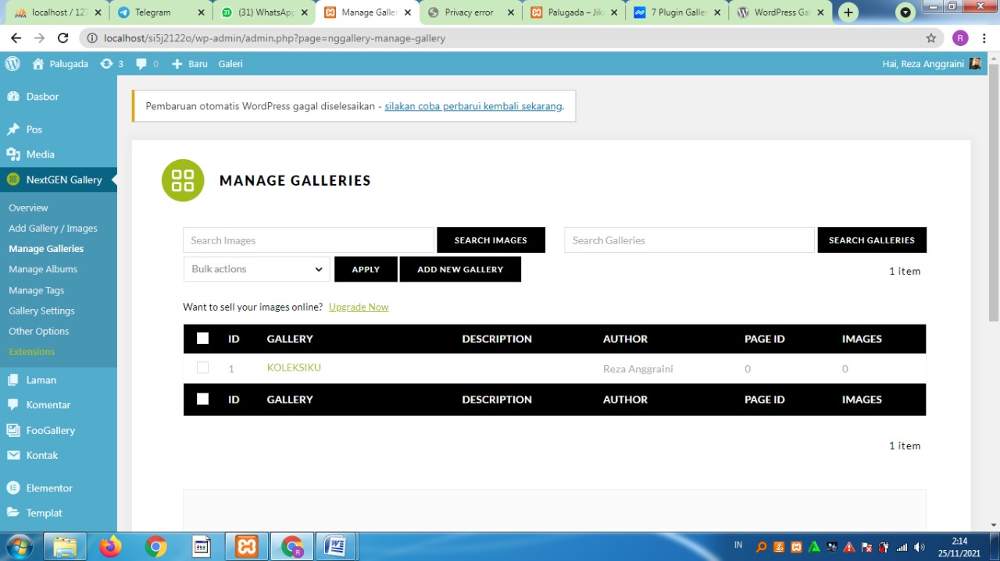
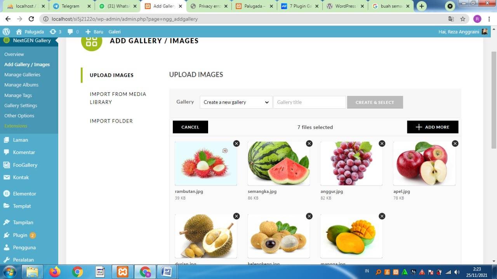
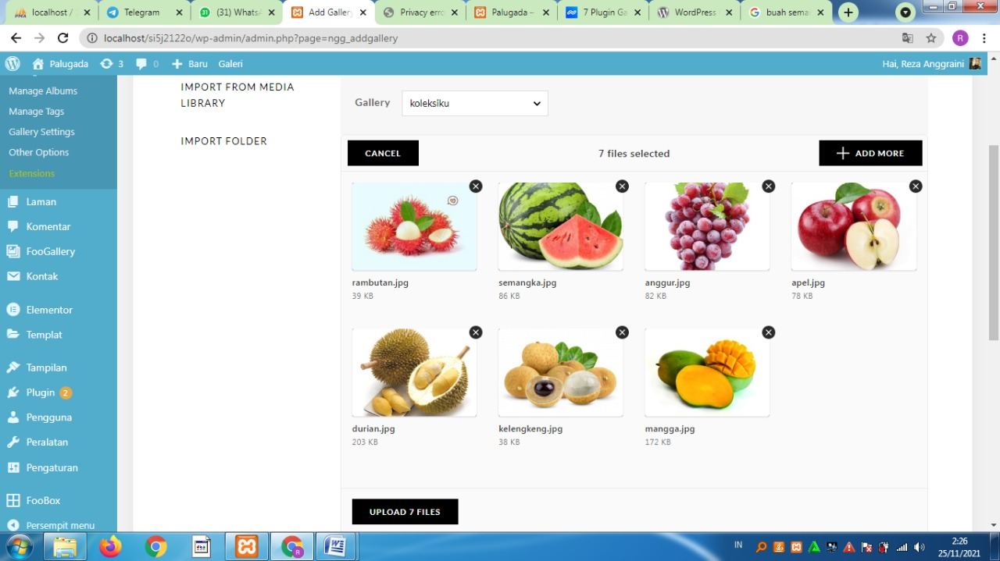
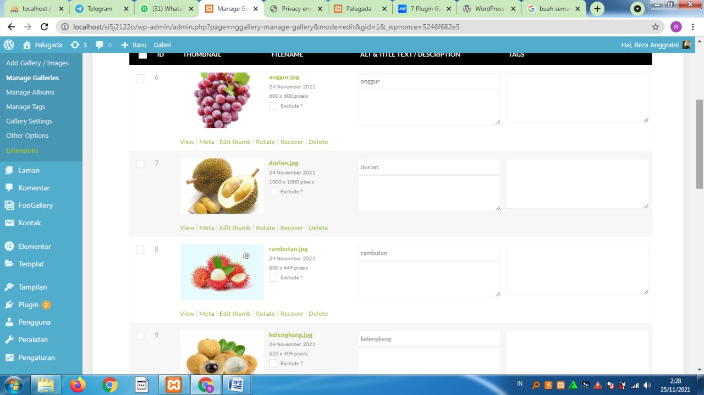
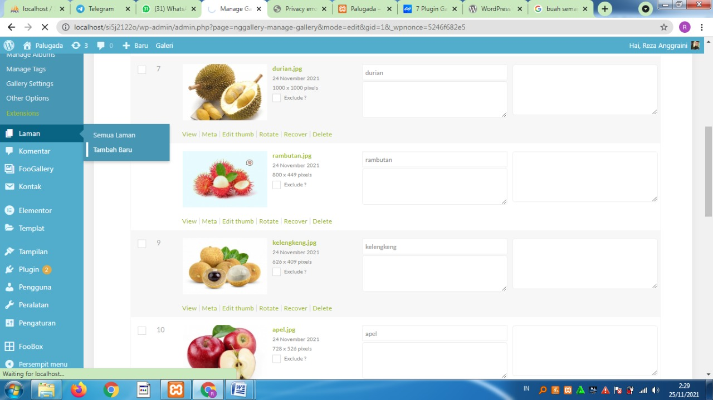
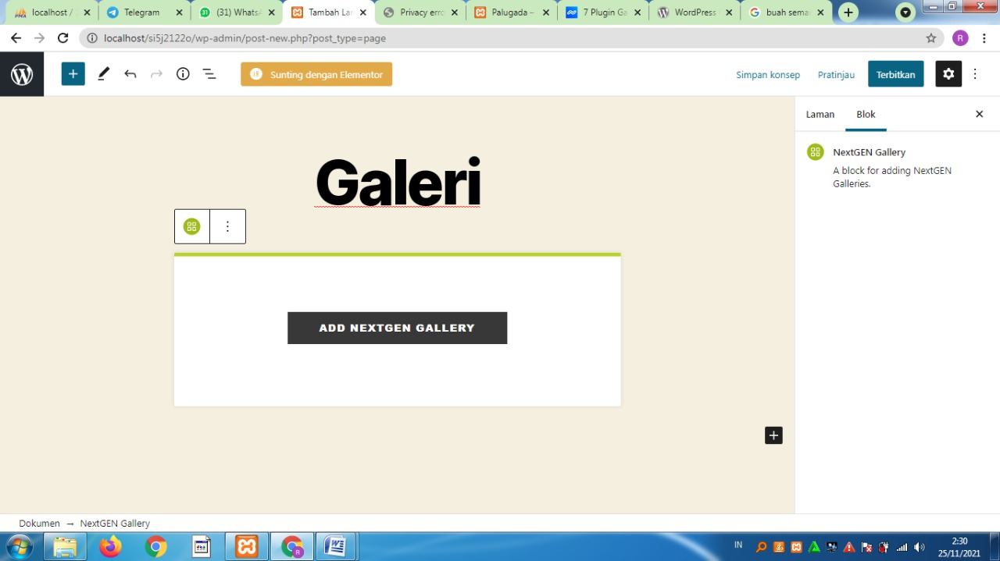
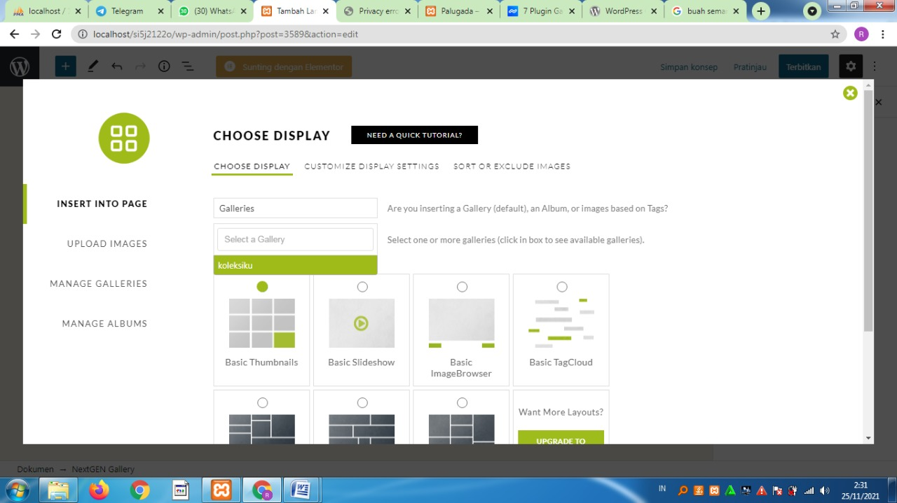
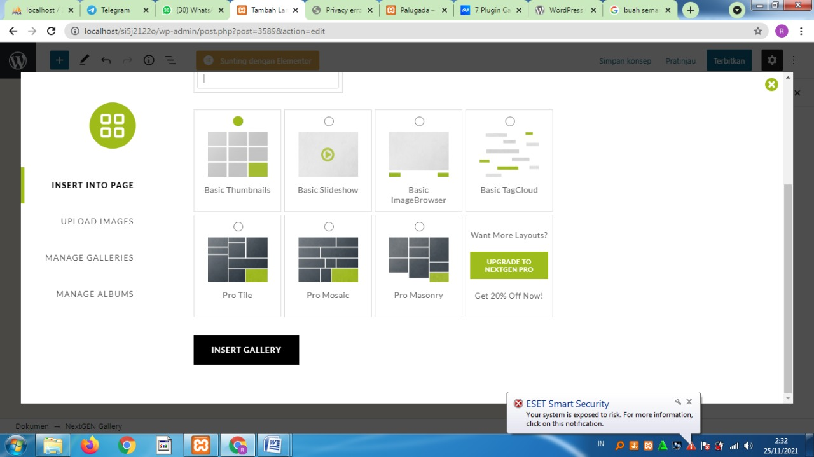
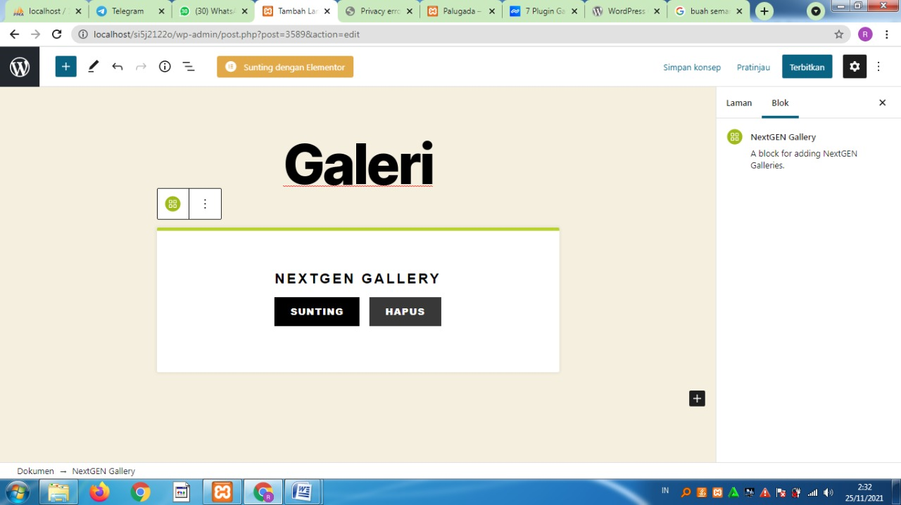
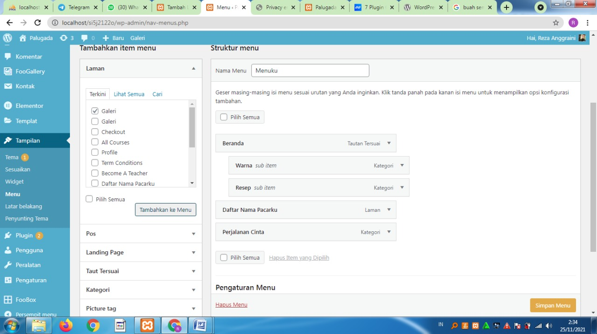
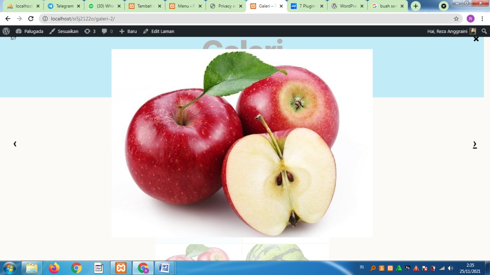

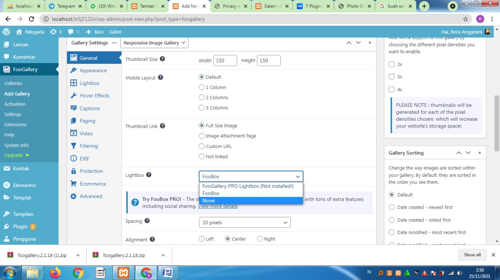